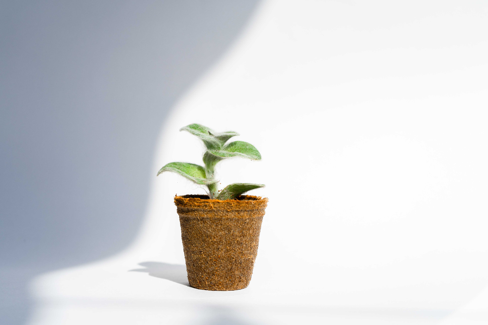
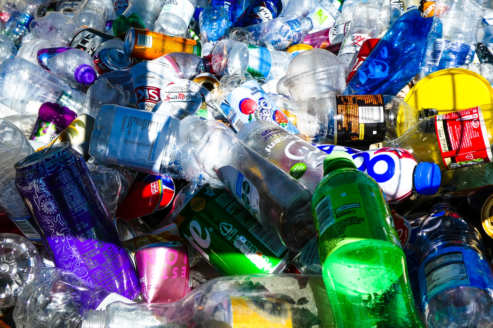

Aprenda a Reciclar
Se você tem vontade de aprender a reciclar e contribuir para um futuro mais limpo para todos as sua volta aqui é o lugar certo. Reunimos os melhores tutoriais sobre reciclagem para você começar agora a práticar também Para outras informações sobre reciclagem não deixe de checar nossa página:

Como Fazer Compostagem Na Sua Casa
Compostagem um processo de transformação de matéria orgânica em nutrientes para as suas plantas, venha aprender a fazer
Veja o video!

Veja o video!
Como Reutilizar Plástico em Casa
Você também pode reutilizar o plástico em casa com essas dicas criativas!
Veja o video!

Reciclagem de Papel em Casa
O processo de reciclagem do papel pode parecer complicado, mas é possível fazer em casa. Vem aprender!
Veja o video!

Como Separar o Lixo em Casa
Você pode facilitar a vida dos coletores separando seu lixo antes de coloca-lo nos Pontos Verdes
Veja o video!